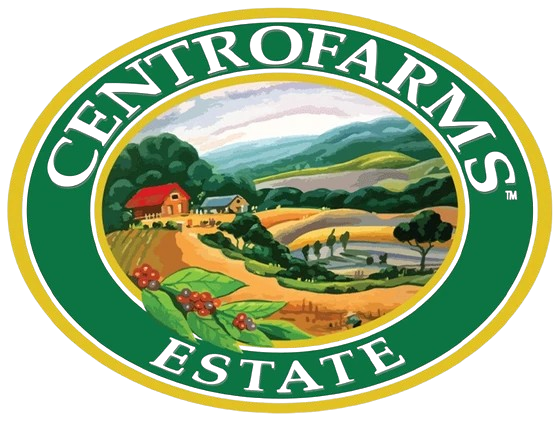
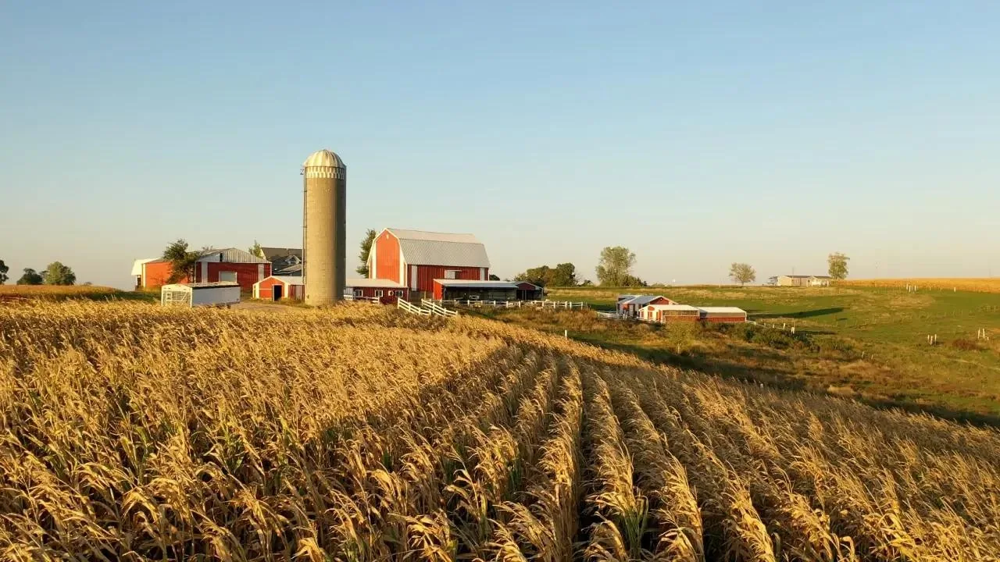

Explore our natural products, specialty green coffee, poultry, and soil solutions.
Three carefully selected green coffee expressions
Black soldier fly frass · Soil amendment
Himalayan Pink Salt
Build the American dream, together
